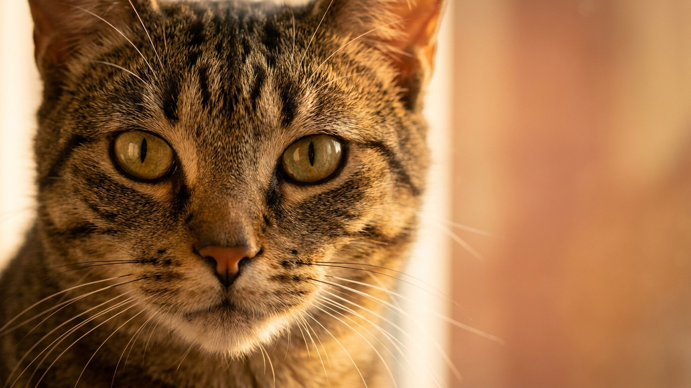

Питомец засыпает, и через минуту из кресла доносится уверенное посапывание. У многих владельцев это вызывает умиление — особенно если пёс лежит на спине с запрокинутой головой. Но иногда за привычным звуком стоит не поза, а то, что стоит показать ветеринару. Разберём, когда храп — это просто порода и положение тела, а когда его характер изменился.
🐾 Не уверены, что с питомцем всё в порядке?
Опишите симптом в AnimaLife или пришлите фото — AI-ветеринар за минуту скажет, можно ли наблюдать дома или ехать к врачу сегодня. Бесплатно, круглосуточно, без записи.
Проверить симптом → Проверить в MAX →
У вас iPhone? AnimaLife есть в App Store
1. Поза во сне. Самая частая причина. Когда кошка или собака спит на спине или свернувшись с запрокинутой головой, мягкое нёбо частично перекрывает воздушный поток. Стоит питомцу перевернуться — храп прекращается. Это не повод для беспокойства.
2. Строение морды. Брахицефальные породы — мопсы, бульдоги, французские бульдоги, персидские и экзотические кошки — храпят структурно. Укороченная морда означает, что дыхательные пути у них изначально теснее. Для этих пород негромкий регулярный храп — норма породы, а не сигнал тревоги.
3. Избыточный вес. Жировые отложения в области шеи и грудной клетки сужают дыхательные пути. Если питомец поправился и начал похрапывать — это связанные вещи. Нормализация веса часто снижает интенсивность храпа.
4. Сухой воздух и пыль. В отопительный сезон воздух в квартирах пересыхает. Слизистые раздражаются, ткани чуть набухают — это усиливает храп. То же самое при контакте с пылью или шерстью других животных.
Ключевое слово — «изменение». Если питомец всегда немного похрапывал и ничего больше не изменилось — спокойно наблюдайте. Поводом показать врача служат:
Эти изменения не обязательно означают серьёзное состояние, но точно требуют осмотра — ветеринар послушает и при необходимости направит на дополнительные обследования. Описывать врачу лучше конкретно: когда началось, в какой позе происходит, есть ли другие изменения в поведении или аппетите.
🐾 Проверьте своего питомца, пока помните
Откройте AnimaLife, опишите, что беспокоит, — получите разбор и понятный план действий. Ответ за минуту, бесплатно и без очередей.
Спросить AI-ветеринара → Спросить в MAX →
У вас iPhone? AnimaLife есть в App Store
🐾 Понравился разбор?
Подпишитесь на канал — каждый день разбираем по одному тревожному симптому у кошек и собак: что в пределах нормы, а когда пора к врачу. Подпишитесь, чтобы не пропустить разбор, который может спасти здоровье вашего питомца.
Материал носит информационный характер и не заменяет очную консультацию ветеринара.